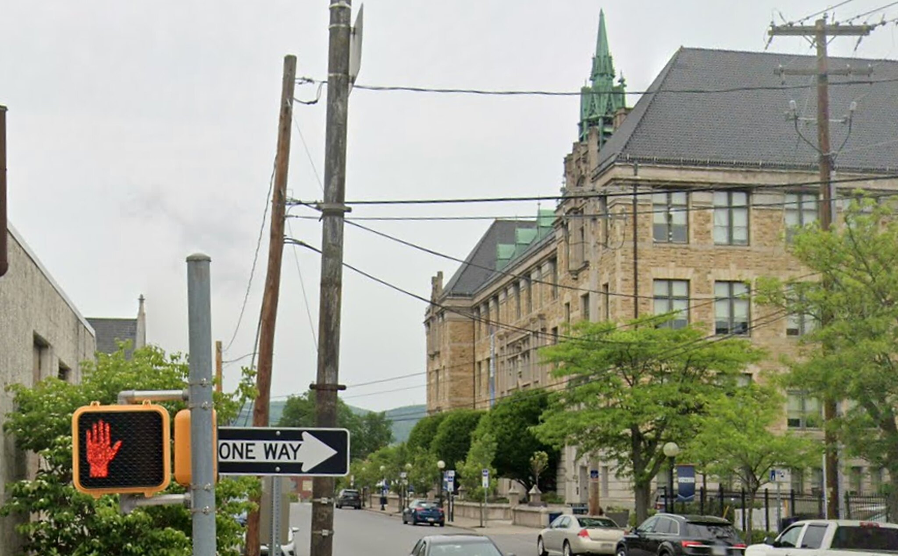
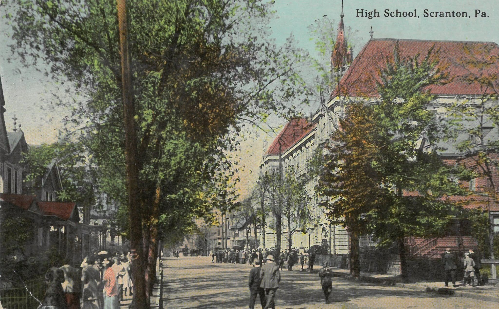

Scranton, Pennsylvania · Then & Now
High School,
Scranton, Pa.
Scranton Central High School opened in 1895 on a hill above downtown, on what was then a residential block — those are houses along Vine Street on the left. The tower and the roofline hold their positions. The canopy of trees does not, and the crowd walking under it has become a curb of parked cars.
1910
Today


Drag to compare · arrow keys to scrub
ThenPostcard, “High School, Scranton, Pa.,” 1910. Collection of the Lackawanna Historical Society.
NowGoogle Street View. Imagery © Google.